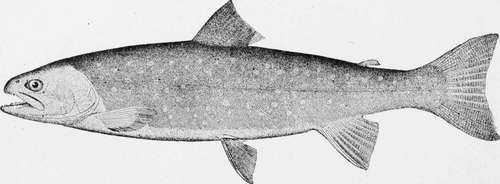

Black-Spotted Trout-Salmo Purpuratus. Part 3
Description
This section is from the book "American Game Fishes", by W. A. Perry. Also available from Amazon: American Game Fishes: Their Habits, Habitat, and Peculiarities; How, When, and Where to Angle for Them.
Black-Spotted Trout-Salmo Purpuratus. Part 3
Dinner over, we walked up the track about two miles to where there was a good place to get down to the stream, waded into it, and the trouble began at once. We entered at the head of a boiling rapid, and both cast at about the same time. I missed my first rise, but my companion hooked a big one that, after making two frantic leaps, turned and went down the stream like a bolt of lightning, taking the lead, fly, and a foot of leader with him. He appeared to be about eighteen inches long, and would probably have weighed three pounds or more. I had meantime secured a couple of small ones, that fought gamily, but came to the net without serious difficulty. Meantime my neighbor had repaired the damage to his tackle, and at the next cast secured three- two of about a pound each, and one of half a pound. They gave him a lively tussle for perhaps ten minutes, when he netted and creeled them safehy. I had meantime fished on down to the foot of the rapid without getting another rise. We whipped the big pool at the foot of the rapid, from opposite sides, without success, and then started down the next reach of swift water. At the second cast I made in this, a two-pounder took my first dropper-a brown tackle-and began a series of leaps and rushes that made me shudder. He finally headed down the stream. I gave him line, and when he had taken out perhaps fifty feet of it I felt a fearful surge on my rod, that told me plainly my foe had received reinforcements. An instant later a Trout fully twenty inches long leaped full out of the water, turned a complete somersault, shook his jaws savagely and returned to the foaming element, with a splash that threw sparkling drops high on the shore. The big fellow now headed up the stream with such vigor and determination as to tow his mate bodily through the current for some twenty feet, though the junior captive plunged and bucked like a wild cayuse in his efforts to resist. I trembled for my tackle, but, releasing the spring of the automatic reel, every inch of slack came in as fast as it was given.
The big Trout soon tired of his load; turning square about, he made a dive for the pool at the foot of the rapid, and his running mate seconded the motion. Again I pressed the spring, and the reel sung a lively song as the line went out. Meantime, I followed as fast as I could, but my footing was insecure, the rocks slippery, and I was in constant fear lest an unlucky slip should land me on my back in the icy water.
Dolly Varden Trout- Salvelitius Mainai.
When the pair of racers reached the deep water, they were nearly a hundred feet ahead of me, and I wished I could have had a telegraph wire on them, instead of the little frail silken line that was singing through the water and vibrating in the air ahead of me.
I held it taut, rushed down the river as rapidly as possible, taking up all the line I could get as I went. When I reached the head of the pool and got a footing on a bed of gravel at the water's edge, my hopes returned, but I was still sorely harassed by fears, for my Trout were now cutting, darting and leaping hither and thither at such a rate that it seemed impossible that the delicate tackle could stand the strain much longer.
Presently the smaller of the two began to tire of the uneven contest, and gradually yielded to being towed about by his powerful companion-sometimes on his side and sometimes on his back.
I now took a firm control of the big one, and commenced to haul in on him. He still resisted and fought obstinately, but time and his heavy load at last began to tell on him too. His rushes became less vigorous than at first, and he yielded more and more to the strain of the rod. He had now not more than twenty feet of line out, and occasionally showed a disposition to stop and rest, but this I did not allow. I stirred him up and kept him moving. Gradually he submitted to tension. I got the landing-net ready, and waded out till the water came near the tops of my rubber boots. I made one more recovery of line, passed the rod well back over my shoulder with my right hand, and as the two racers came floating helplessly toward me I slipped the net under them, raised them partially out of the water, staggered to the shore, and sank on the gravel almost exhausted, but as proud a man as ever drew the breath of life.
The parson, who had long since quit fishing, came down to the pool and stood watching the fight; but I didn't know it until he spoke.
"Great Caesar!" he said, as he saw the fish safely enveloped in the net; "that sight is worth all my trip has cost from Pennsylvania out here. If I could catch such a fish as that big one, I don't think I should sleep a wink for a week."
"Well, I hope you'll get a larger one before night, though I don't want you to lose any sleep over it, if you do."
I lifted the two fish from the net, laid them tenderly on the gravelly beach, and we sat down to admire them; and if God ever made anything more beautiful than they were, it has not yet been my good fortune to see it. Their symmetrical shape, the dark green of their backs, the iridescent, silvery whiteness of their sides and under parts, all sprinkled with tiny black dots; the scarlet covering of their throats and the delicate tinting of their fins-all combined to make up an ensemble of loveliness that could scarcely be excelled, if all the elements of beauty in nature were merged into a single object.
The larger of the two Trout measured twenty and three-fourths inches in length and twelve and one-fourth in girth; the smaller fifteen and one-half in length and six and one-half in girth. We regretted that we had not a scale with us, but estimated the weight of the larger fish at something over four, and of the smaller at two pounds.
After resting a few minutes I began to dismount my rod.
Continue to:
- prev: Black-Spotted Trout-Salmo Purpuratus. Part 2
- Table of Contents
- next: Black-Spotted Trout-Salmo Purpuratus. Part 4